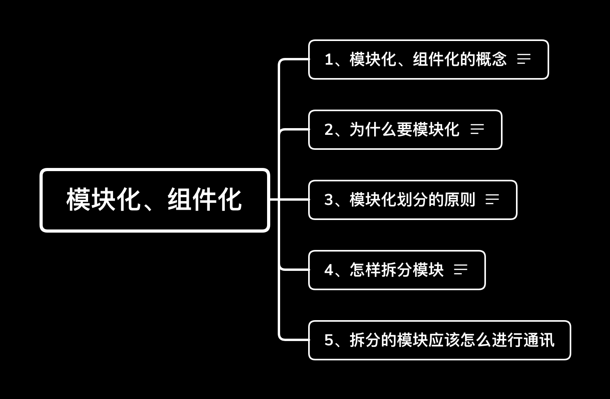

其实模块化并没有你想的那么难
前言：不知道大家是不是像我没做模块化、组件化之前一样，感觉这个架构是一个很高深、很复杂的东西，做起来应该很难，其实做过之后你会发现模块化、组件化不过如此。这篇文章我将会向大家分享一下与模块化、组件化的一些知识，相信当你读过这篇文章后，你也会觉的模块化、组件化不过如此。
本文的基本结构
  本文的结构如下图，文章将会围绕下图列出的几点来详细的讲解模块化、组件化的知识。
模块化、组件化的概念
  模块化、组件化是一种架构思想、与平台无关的一种解耦手段。为什么我们总是把模块化、组件化放在一起呢？因为它们之间的关系是你中有我，我中有你的关系。就比如，我们将一个app拆分成几个功能模块，这几个模块肯定会依赖一些公共的组件，如网络组件、图片组件、音视频组件等，而这些组件中可能又会细分出一些模块，如图片组件中的，下载模块、缓存模块等。如果非要将它们两个区分开来，可能就是下面的定义：
- 模块化：即可以表示上层的业务，也可以表示底层或者公用组件中的模块
- 组件化：一般是在底层或则公用组件
为什么要模块化、组件化
  项目做的好好的，为什么要将项目改成模块化、组件化的架构呢？原因如下：
- 随着项目版本的不断迭代，项目的功能不断增多，代码就会变得越来越复杂，耦合度就会越来越高，可能一个小的改动就会影响到好多功能。
- 项目功能的不断增多，负责项目的开发人员可能由当初的一个人变成几个人来协同开发，这时可能就会出现大家都修改了某段代码或者都增加某些相同代码的情况。
- 随着代码的不断增加，我们编译整个项目的时间就会变得越来越长，严重影响开发效率。
将项目改成模块化、组件化的架构，就是为了解决上面出现的问题。
  其实不是每一个项目都应该有模块化、组件化的架构的。比如，我们做了一个小项目，这个项目的功能很少，并且以后也不会增加新功能，一个人开发这个项目完全没问题，在这种情况下，如果再用模块化、组件化的架构，简直就是杀鸡用牛刀、劳命伤财。
模块化划分的原则
  在我们将项目模块化的时候，就会面临怎么拆分模块的问题，所以在拆分模块化的时候就要遵循一些原则，需要遵循的原则就是
- 同层模块间不能相互依赖。
- 只能上层模块依赖下层模块，下层模块不能依赖上层。
为什么要说这两个原则呢？因为在模块化的时候你可能会遇到不知道将某段代码应该放在哪个模块中的问题，这时你就根据上面的原则来判断应该将代码放在上层还是下层或则应该放在哪个模块中。
  解释一下上面的两个原则，看下图

从图中可以看到，这里将模块化分成了四层，“同层之间不能相互依赖”这个原则，就是说在同一层的各个模块之间不能有依赖的关系，如在“业务功能模块”这一层可能会有几个功能模块，这几个功能模块之间是不能有依赖关系的。“只能上层模块依赖下层模块，下层模块不能依赖上层”这个原则就是不能让层级在下面的模块依赖上层的模块，如果有依赖关系，应该将被依赖的模块放在依赖模块的同层或则下层。
怎样拆分模块
  关于这个问题呢，并没有明确的答案。一般采用的做法就是将一些公用的并且不会变动或者不常改动的功能放在基础库中，如网络请求、图片加载及一些工具类等。基础组件着一层呢，就是放置一些第三方的SDK，如支付、统计、bug收集等。业务功能模块这一层就是放置我们项目功能有关的代码，这一层的拆分关系到以后开发的耦合度，因此要慎重，当然最合理就是一个功能拆分成一个模块，但这样就会出现拆分的粒度太小的问题，所以关于这一层的拆分最好是团队内讨论决定。最上面的一层就是app的壳了，这一层一般不会有什么功能，就是用来初始化项目，Android项目一般会将应用的application类放置在这层。
拆分后的模块应该怎样进行通讯
  从上面模块间划分的原则，可以知道，同层模块之间是不能相互依赖的，这就会出现“不能依赖，模块间怎么通讯的问题？”举个例子，在两个模块之间，如果一个ActivityA要跳转并传值给ActivityB，应该怎么传值呢？没有模块化的时候可以通过stratActivity或则startActivityForResult方法来显式跳转界面完成传值，但是在模块化开发时，可能ActivityA在A模块里ActivityB在B模块中，因为模块A和模块B在同一层，没有依赖关系，就不能直接传值了，那怎么解决这个问题呢？答案就是用路由的方式，在Android中一般是用ARoute开源库，使用这个库后只要定义好跳转的路径就行了，在打包app后就会根据定义好的路径找到对应的界面，关于具体的使用方法，大家可以自行搜索。
总结
  本文主要的内容是将模块化的思想说明了一下，本文的目的是让大家不再认为模块化是一个很难的架构，不再会因为觉得模块化是一个比较高深的东西而不敢尝试。如果在项目开始的时候不考虑模块化，那么随着项目的发展总有一天你会采用这个架构的，等项目大起来以后重新修改架构就不是那么容易了。希望大家在做项目的时候不要欠下技术债，如果技术债是不可避免的，那么应该尽早的偿还。
结束语
  文中并没有讲解模块化的具体实现，关于具体的实现细节网上已经有很多的文章了，可以根据自己的需要自行了解。本文主要就是让大家领会模块化的思想，理解思想之后，剩下的就是去实践了，相信读过本文之后，你做起模块化一定会事半功倍。